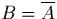

La maquette possde en mmoire les codages binaires du mot de synchronisation de 24 bits A, et de son complmentaire

.Les bits qui arrivent sont copis dans un registre tournant de 24 bits, les uns aprs les autres, et ce registre est compar chaque rception de nouveau bit au mot A puis au mot B. Si le mot A est reconnu, le prochain bit qui arrivera correspondra au dbut d'un mot, et le dispositif se recale donc en consquence afin de lire correctement les prochains mots de 8 bits. Il se peut, aussi, que le mot B soit reconnu, ce qui signifie que le signal effectivement reu est le complmentaire de celui initialement transmis, et le dispositif transforme alors le signal reu en son complmentaire afin de rtablir le signal numrique initial.